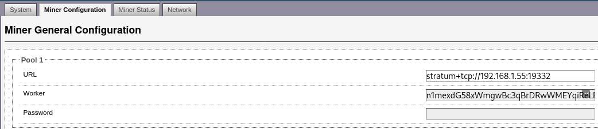

Dave Parrish's Blog
Dave Parrish's Blog
How I Mine Bitcoin Testnet Coins
I wanted about 1 tBTC of Bitcoin Testnet, but I know of no way to puchase testnet coins and getting that much in faucets would take longer than I was willing to spend. Maybe there are better faucets for collecting tBTC which I’m not aware of.
I would have liked to simply purchase the tBTC but I think selling tBTC is looked down on, which is quite unfortuante, if you ask me. The best I could come up with for getting a lot of tBTC is to mine it directly. Here I explain how I mine Bitcoin testnet.
Overview
My process was to setup a Bitcoin Testnet node. Then I run P2Pool so that I could point a sha256 miner at something that had a pool connection interface. Of course, access to a sha256 miner is needed. A Bitcoin Testnet wallet is also needed for collecting block rewards.
Bitcoin Testnet node
First of all, I need to run a full node running Bitcoin Testnet. I do this using the BTC Privacy Suite. The instructions for getting started are to clone the repository and then ./build && ./start. I first edit the node settings to enable Testnet.
- Change
TESTNET_NUMin.envbefore running./build && ./start:
Copy
overrides/bitcoin-expose-ports.yml.tpltooverrides/bitcoin-expose-ports.ymlto expose RPC connection ports to P2Pool.Add the section below in
bitcoin_data\bitcoin.confafter running./build && ./start:
# Some testnet settings needed for 0.19, if using testnet
[test]
# Allow RPC connections from outside of container localhost
rpcbind=0.0.0.0
onlynet=onion
rpcallowip=0.0.0.0/0
addnode=va5vwn2ennpkjj2o.onion:18333The addnode section will help testnet to connect through Tor only.
I also set the rpcuser and rpcpassword to something other than the default. The P2Pool connects to Bitcoin core through RPC.
P2Pool node
I then need an interface to connect an S17 miner. An S17 Miner cannot directly connect to bitcoin core, that I am aware of. I run the P2Pool software to allow the miner to get work and and mine new blocks. I created a Dockerfile which can setup a version of P2Pool which works on Bitcoin (BTC) and testnet.
To use the p2pool Docker repository I clone the repository with git clone https://github.com/dmp1ce/p2pool-DOCKERFILE. Then I build the Docker image and use a docker run command to connect to the Bitcoin full node and listen for mining connections.
I use docker build --pull -t p2pool ./ to build the image and then docker run -d -p 19332:19332 -p 19333:19333 -it --rm p2pool --testnet --bitcoind-address $BTC_NODE_IP -a $BTC_ADDRESS --net bitcoin $RPC_USER $RPC_PASSWORD to run the node. I use docker logs -f to view the real-time logs. I use docker ps to find the name of the container of the logs I need to view.
$BTC_NODE_IP: Is the IP address to the full node. Something like192.168.1.55.$BTC_ADDRESS: Is the P2PKH BTC Testnet address generated from Electrum. Something liken1mexdG58xWmgwBc3qBrDRwWMEYqiReLEb.$RPC_USER: Is the RPC user. Something likebob.$RPC_PASSWORDIs the RPC password. Something likeSUPER secret PASSWORD 123456.
SHA256 Miner
Thanks to a kind miner, I was able to use a S17 AntMiner for a few hours, in order to test my setup and generate some testnet coins. Other minering devices, such as S9 Antminers should have similar setups.
As explained in the instructions from P2Pool README I use stratum+tcp://$BTC_NODE_IP:19332 for the URL field where $BTC_NODE_IP is the node IP running the P2Pool software. I use the same BTC address generated from Electrum for the “Worker” field. The GUI looks something like this: 
Bitcoin Testnet wallet
Running the Electrum on Testnet requires running with the --testnet flag. So, on the command line, it looks like this electrum --testnet on Arch Linux. Once Electrum, is running, addresses can be generated the usual way but on testnet they will look different. I wasn’t sure what type of addresses were compatible with mining and P2Pool, so I used the legacy (P2PKH) addresses. See Bitcoin address types in the bitcoin wiki if you get confused about address types like me, but remember testnet addresses will look different than mainnet.
Mining results
Soon was able to see transactions coming into my Electrum wallet! After about 30 minutes of generating blocks I had about 2 tBTC. I was surprised they were much smaller rewards than the mainnet. Only about 0.2 tBTC per block. The reason for the small reward is the testnet has many more mined blocks, and therefore has had many more reward adjustments. Also, there are not many mining fees being collected as compared to mainnet.
S17 Antminers are quite powerful at the time of writing, so I could easily solo mine testnet until I had all the coins I wanted. If you are not lucky enough to have access to a S17 Miner then you could give a mining rental service a try such as MiningRigRentals.com. You will need to forward your P2Pool connection port to the internet so that the mining rental service can access your P2Pool node.
Conclusion
That was everything I needed to get coins mined on Bitcoin Testnet. I hope you found my write-up helpful. Happy hashing! ⛏
Modified: September 19, 2020 - 06:55:44 PM